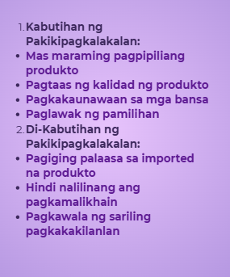
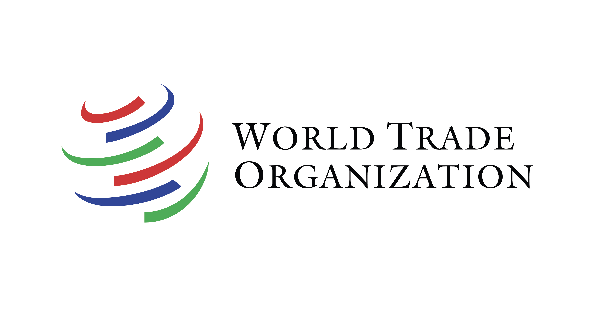
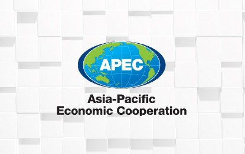
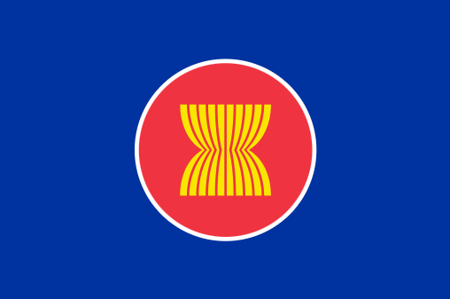
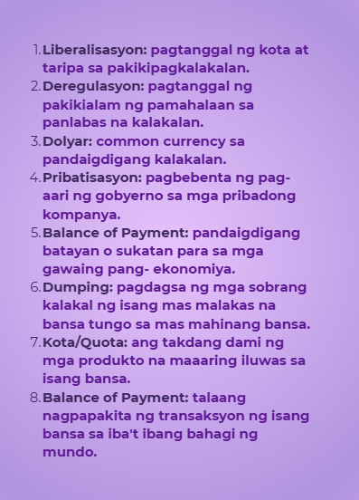

Ang kalakalang panlabas ay palitan ng produkto at serbisyo sa pagitan ng mga bansa, dahil walang bansang kayang mag-isa. Ito ay maaaring bilateral (2 bansa) o bloc (organisasyon at bansa). Kabilang dito ang eksport (pagluluwas) at import (pag-aangkat).
- Taripa/Tariff: Buwis sa imported na produkto; nagpapataas ng presyo at nagpapababa ng benta.
- Kota (Quota): Limitasyon sa dami ng inaangkat na produkto.
- Subsidy: Tulong pinansyal ng gobyerno para mapababa ang gastos sa produksyon ng lokal na produkto.
Nakakalikha ng mas maraming bilang ng produkto gamit ang mas kaunting salik ng produksyon kumpara sa ibang bansa.
Ang bansa ay magkakaroon ng espesyalisasyon sa paglikha ng kalakal.
Kapag kaya ng bansa gawin ang kalakal ng mas efficient kumpara sa ibang bansa.
Hal. Cebu may comparative advantage sa pagluto ng Lechon.
Ang balance of trade ay ang relasyon ng export at import. Kapag mas malaki ang import kaysa export, ito ay trade deficit. Kapag mas malaki ang export kaysa import, ito ay trade surplus.


Sanggunian: UN
Naitatag noong Enero 1, 1995, ang World Trade Organization (WTO) ay namamahala sa pandaigdigang kalakalan. Layunin nitong paunlarin ang maayos na kalakalan, pababain ang trade barriers, magsilbing plataporma para sa negosasyon at tulong sa developing countries, at magpatupad ng trade sanctions sa hindi sumusunod sa desisyon..

Sanggunian: Philippine News Agency
Ang APEC, naitatag noong Nobyembre 1989, ay naglalayong paunlarin ang ekonomiya at katiwasayan sa Asia-Pacific. Layunin nitong isulong ang liberalisasyon ng kalakalan, pagpapadali ng negosyo, at pagtutulungan sa ekonomiya at teknolohiya.

Sanggunian: Wikipedia
Ang ASEAN, naitatag noong Agosto 8, 1967, ay naglalayong paunlarin ang malayang kalakalan sa mga kasapi at dialogue partner. Noong 1992, nabuo ang ASEAN Free Trade Area (AFTA) na nag-aalis ng taripa at quota sa pamamagitan ng CEPT upang mapadali ang daloy ng produkto.
Pinapayagan ang dayuhang bangko na magtayo at magpatakbo ng sangay sa bansa.
Nagtataguyod ng mga lokal na produkto sa pandaigdigang pamilihan sa pamamagitan ng iba't ibang estratehiya.
Nangangalap at nagpapalaganap ng datos at impormasyon tungkol sa ekonomiya, kalakalan, at industriya, pamahalaan, at kapakanan ng mamimili.
Naglulunsad ng mga programa at pagsasanay upang mapahusay ang kakayahan at produktibidad ng manggagawa.
